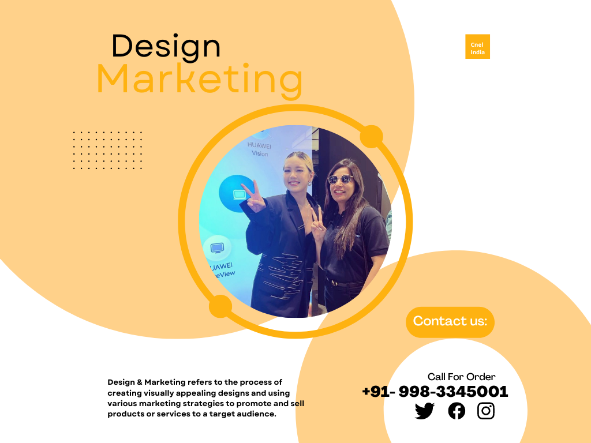

How can CnEL help you build an eye-catching Design and Market your idea?
Design encompasses the creation of visual elements such as logos, graphics, layouts, and branding that are used to represent a business or product. The goal of design is to create an attractive and memorable visual identity that can help to differentiate a business or product from its competitors.
Marketing, on the other hand, refers to the process of promoting and selling products or services to a target audience. This can include various strategies such as advertising, public relations, direct marketing, and sales. The goal of marketing is to create awareness and interest in a product or service, and to ultimately drive sales and revenue.
In summary, Design & Marketing is the combination of creating visually appealing designs and promoting it to the target audience by using various marketing strategies to achieve business goals.
Why do you need Design & Marketing services?
There are several reasons why a business may need Design & Marketing services:
1.Branding and Visibility: A professional design and marketing strategy can help to create a strong brand identity and increase visibility for a business or product. This can be achieved through the creation of a memorable logo and visual elements, as well as effective marketing campaigns.
2.Attracting customers: A well-designed marketing campaign can help to attract new customers and generate interest in a business or product.
3.Increase sales and revenue: An effective marketing campaign can increase sales and revenue by reaching the target audience and creating interest in the product or service being offered.
4.Competitive advantage: A professional design and marketing strategy can give a business a competitive advantage over its rivals by making it stand out in the market.
5.Building trust and credibility: A professional design and marketing strategy can help to build trust and credibility with customers by showcasing the business or product in a polished and professional way.
6.Adapting to changing customer needs: Design & Marketing Services can help businesses to stay up-to-date with the latest trends and customer preferences and adapt to changing customer needs.
7. Time and cost-effective: Outsourcing design and marketing services to experts can be time and cost-effective for small businesses as it allows them to focus on their core business operations.
In summary, Design & Marketing Services can help businesses to increase brand visibility, attract new customers, increase sales and revenue, gain a competitive advantage, build trust and credibility, adapt to changing customer needs and be cost and time effective.
How small business can grow by using Design & Marketing Services.
Small businesses can grow by using Design & Marketing services in several ways:
1.Branding and Visibility: A professional design and marketing strategy can help to create a strong brand identity and increase visibility for a small business, which can lead to increased customer awareness and interest.
2.Attracting customers: A well-designed marketing campaign can help to attract new customers and generate interest in a small business or product.
3.Increase sales and revenue: An effective marketing campaign can increase sales and revenue by reaching the target audience and creating interest in the product or service being offered.
4.Competitive advantage: A professional design and marketing strategy can give a small business a competitive advantage over its rivals by making it stand out in the market.
5.Building trust and credibility: A professional design and marketing strategy can help to build trust and credibility with customers by showcasing the small business or product in a polished and professional way.
6.Scalability: A professional design and marketing strategy can help a small business to scale and adapt to changing customer needs as the business grows.
7. Cost-effective: Outsourcing design and marketing services to experts can be cost-effective for small businesses as it allows them to focus on their core business operations and not have to invest in hiring and training an in-house design and marketing team.
8. Reach a wider audience: effective design and marketing strategy can help small businesses to reach a wider audience and expand their customer base, which can be beneficial for small businesses that are looking to grow and expand.
In summary, using Design & Marketing Services can help small businesses to increase brand visibility, attract new customers, increase sales and revenue, gain a competitive advantage, build trust and credibility, adapt to changing customer needs, be cost-effective and reach a wider audience which can contribute to the growth of the business.